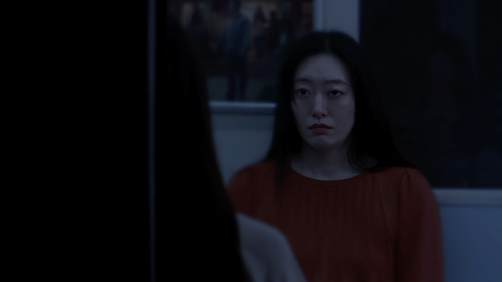
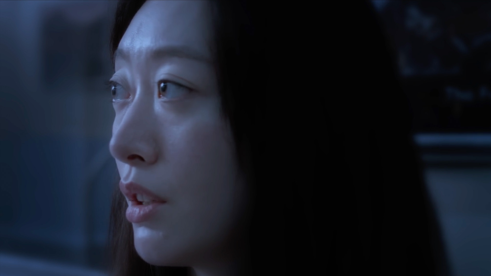
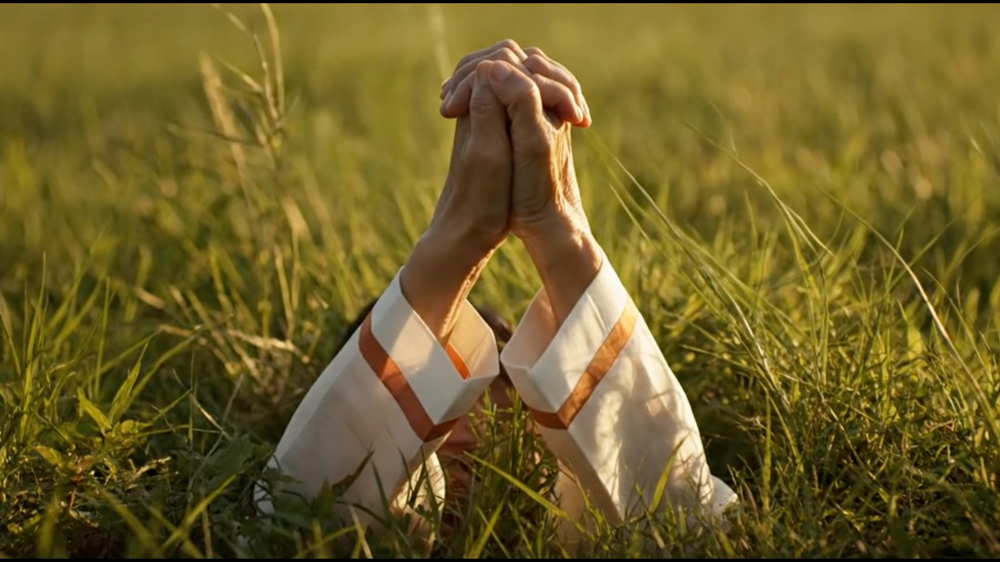

After delivering a eulogy at the funeral of her estranged mother, Jeongeum boards a subway home only to enter a surreal space where time bends and her mother appears once more. In this liminal journey between guilt and grief, can Jeongeum find the courage to forgive?

The story centers on Jeongeum, a young Korean woman quietly unraveling under the weight of intergenerational trauma.
As she travels through a dark tunnel, the train’s flickering lights become a metronome for memory. Opposite her sits her late mother, Heejin, whose age shifts between youth and death, presence and absence. The subway becomes a purgatory-like corridor, cycling through scenes of Jeongeum’s guilt, denial, longing, and eventual spiritual reconciliation.

Stylistically, the film is shot like a lucid dream. Static compositions are interrupted by sudden movements—mirrored gestures, slow chases, repetition. The lights of the tunnel flash across Jeongeum’s face like a dying projector. Through transitions that blur interior and exterior (train and memory, tunnel and cemetery), the narrative weaves back and forth between the present and moments from Jeongeum’s childhood, including a car ride through springtime forsythia and an ominous family conversation about inherited illness.

Dialogue is sparse but potent. Much is communicated through eye contact, mirrored motion, and emotional resonance. The mother’s voice, at times cruel and at other times tender, represents not only Heejin but the shadow of a culture that stigmatizes weakness and burdens daughters with silence.
The title, Proverbs 226, references a biblical verse that reads:
"Train up a child in the way he should go; even when he is old he will not depart from it."
This verse appears twice—once in earnest prayer and once in painful irony. The film questions what it means to raise a child in a world full of fear and silent inheritance.